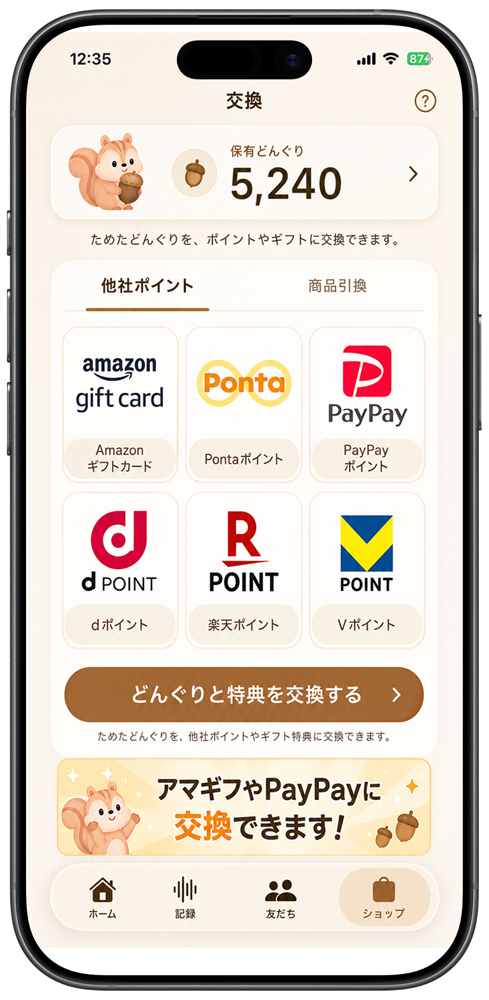
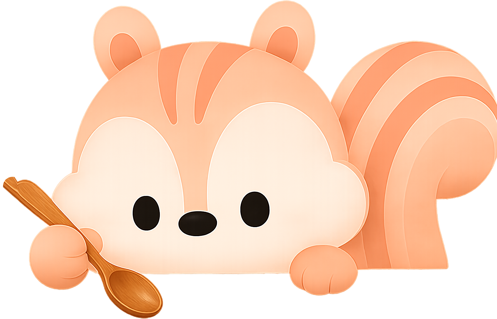
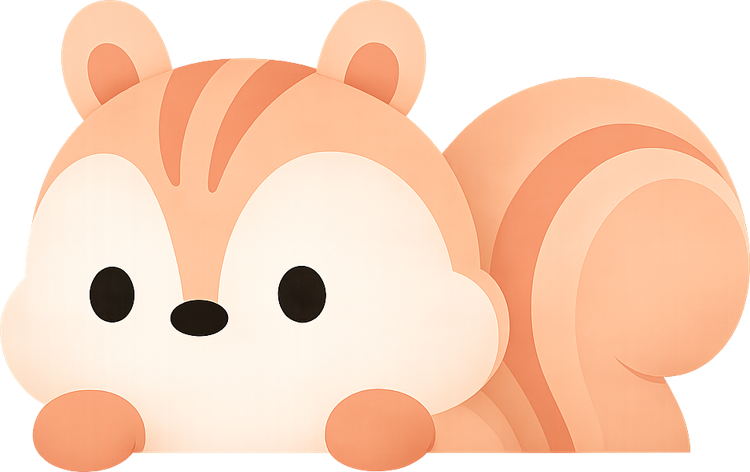

9a
ヒーロー改訂 · 端末傾斜クロップ（8b構成）
一食ごとに、現金が貯まります
一日3回の食事がお金になって返ってくる。

どんぐり1個 = 1円
AirPodsをつけて、いつもどおり食べるだけ。よく噛んだ分だけ貯まり、どんぐり1個＝1円で口座へ。
いくら貯まるかというと。

オディ
こんにちは、リスのオディです。よく噛んだ分をどんぐりに変えるね。
一食でどれくらいになるの？
オディ
一食でだいたい80円、よく噛めば120円まで。三食そろえば1か月で約2,400円だよ。
現金まで3ステップ。
01
つけて食べる
お手持ちのAirPodsをつければ自動で貯まりはじめます。追加で買うデバイスはありません。
02
よく噛む
噛んだ回数・時間・速さ・リズムをもとにどんぐりを獲得。よく噛むほど金額が増えます。
03
現金で受け取る
どんぐり1個は1円。5,000どんぐりから本人名義の口座へ出金、手数料0円。
食べる速さで
もらえる金額が変わります。
もらえる金額が変わります。
同じ1食でも、ゆっくり長く噛むほど多くもらえます。
1日の上限は300どんぐり＝300円。
1日の上限は300どんぐり＝300円。
急いで食べた1日
45どんぐり
45円
ふつうの速さ
80どんぐり
80円
よく噛んだ1日
120どんぐり
120円
今週の獲得
555円
60
月
110
火
45
水
95
木
120
金
70
土
55
日

このペースなら1か月2,400円、
1年で28,800円。
1年で28,800円。
※ 獲得量は食事の習慣によって異なります
よくある質問
AirPodsだけでいいの？
はい。専用デバイスの購入は不要。お手持ちのAirPodsで噛む動きを測定します。
どんぐりはどう貯まるの？
噛んだ回数だけでなく、食事時間・速さ・リズムも合わせて計算します。どんぐり1個は1円です。
現金の受け取り方は？
5,000どんぐりから本人名義の銀行口座へ出金。手数料は0円です。
食事は毎日のことだから。今日の夕食から、貯めてみよう。
友だち追加は無料 · 30秒
※ AirPodsが必要です
※ 獲得量は食事の習慣によって異なります
利用規約 プライバシーポリシー お問い合わせ© 2026 Odi